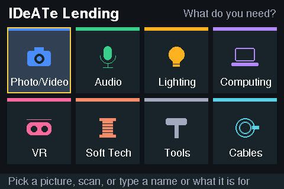
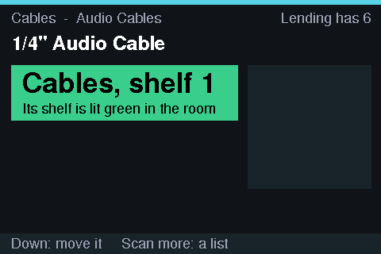
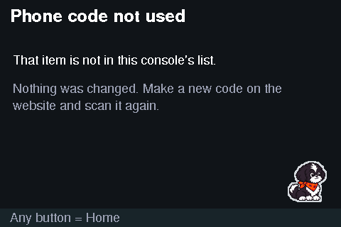
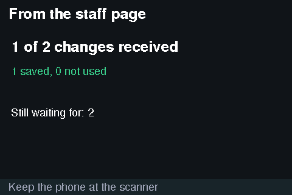

Loki on the console
These are recordings of the console's 480 by 320 screen, taken from the simulator running the real v5.20 code at the real timing. Colours on the actual screen will look a little different.
Asleep on Home
After 5 minutes with nobody touching the console. A button wakes it with a stretch; a key or a scan wakes it at once.

Walks back and forth on a thing you open
On any item you open, when there is room under the shelf box.

Barks at a code it cannot use
In the corner of the message, so the message stays readable.

Hops when a batch is all in
When the last change sent from the staff page has arrived.
